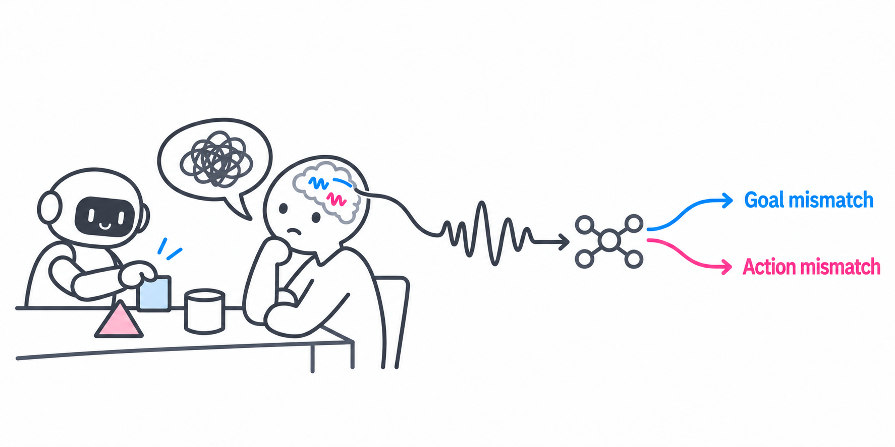

NEURAL VALUE ALIGNMENT
Anything Wrong?
When you can’t say what feels wrong,
your brain may still signal it.
TL;DR
You can feel something is wrong without knowing exactly why. Your brain may hold the clue. NVA explores neural signals to distinguish mismatches in goals and actions, without asking you to explain.

EXPLORE THE IDEA
Find the mismatch
AI selected
RPEReward prediction error
Lower return than expected
SPEState prediction error
Within human tolerance · boundary: 1
Shared next step. Different goals.